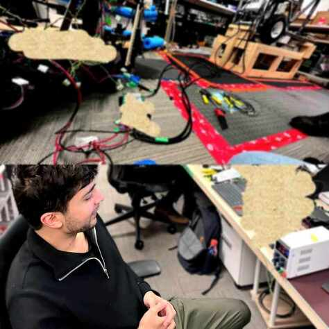
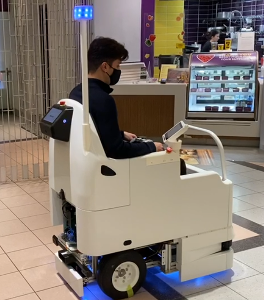
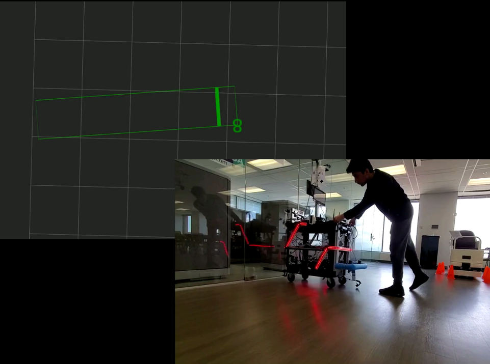

ENGINEERING PORTFOLIO / WORK PROJECTS
Embedded & Controls
Firmware and communication systems for dependable physical machines.
Embedded & Controls
3 WORK PROJECTS
01 / WORK PROJECT
Power management firmware
PLC firmware coordinating power, communication, and fault recovery in an autonomous mobility platform.
View project ↗
02 / WORK PROJECT
Motor control & fault recovery
CAN-based motor software with emergency stopping, fault feedback, and recovery behavior.
View project ↗
03 / WORK PROJECT
Transparent obstacle sensing
Sonar integration and sensor placement studies for detecting glass during robot navigation.
View project ↗